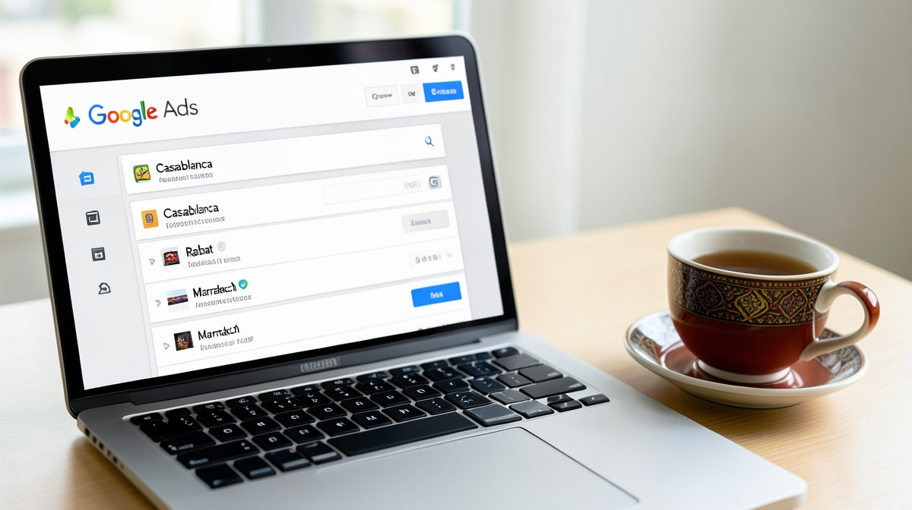
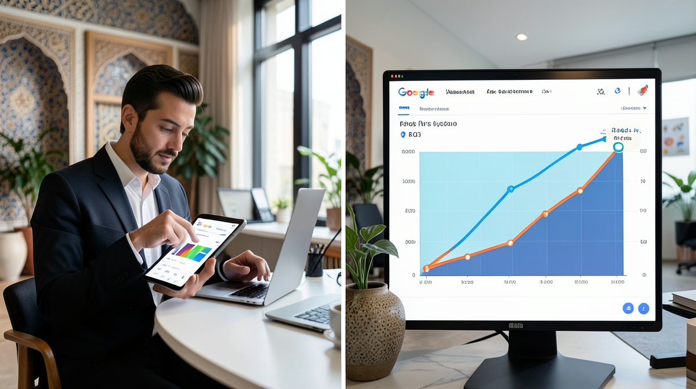

Google Ads, c'est quoi exactement?
En résumé : Google Ads au Maroc : Le Guide Complet 2025 pour Maximiser Votre ROI en MAD est une démarche stratégique clé dans le domaine du Google Ads & SEA. Elle permet aux entreprises au Maroc d’optimiser durablement leurs performances digitales, d’augmenter leur visibilité et de maximiser le retour sur investissement (ROI) de leurs campagnes.
Google Ads est la régie publicitaire de Google qui permet aux annonceurs d'afficher des annonces sur le réseau de recherche, display, YouTube et Shopping. Concrètement, vous payez pour apparaître en tête des résultats quand un internaute tape "agence web Casablanca" ou "meilleur hôtel Marrakech". Au Maroc, c'est le levier SEA le plus utilisé, avec des enchères en MAD et une audience locale ultra-qualifiée.
Pourquoi Google Ads est incontournable pour les entreprises marocaines en 2025
Le marché marocain est en pleine digitalisation. Selon une étude récente, 78% des recherches locales débutent sur Google. Que vous soyez une PME à Rabat ou un e-commerce à Tanger, Google Ads vous permet de capter cette demande en temps réel. Pas de gaspillage : vous ne payez que lorsqu'un utilisateur clique. Et avec le ciblage géographique, vous touchez uniquement les prospects dans votre zone de chalandise.
Les avantages concrets pour le marché local
- Ciblage hyper-local : Diffusez vos annonces uniquement à Casablanca, Marrakech ou dans un rayon de 10 km autour de votre boutique.
- Budget maîtrisé : Commencez avec 50 MAD par jour et ajustez selon les performances.
- Résultats mesurables : Suivez chaque clic, appel, achat en ligne. Plus de mystère.
Étape 1 : Définir votre stratégie et vos objectifs
Avant de lancer une campagne, posez-vous les bonnes questions. Voulez-vous des ventes en ligne? Des leads téléphoniques? Du trafic en magasin? Chaque objectif nécessite un type de campagne différent.
- Ventes en ligne : Campagne Shopping ou Search avec suivi des conversions e-commerce.
- Leads : Campagne Search avec formulaire de contact ou appel.
- Notoriété : Campagne Display ou YouTube.
Exemple concret : Un restaurant à Casablanca voulait augmenter ses réservations. Nous avons mis en place une campagne Search avec des mots-clés comme "meilleur restaurant casablanca" et un ciblage géographique de 5 km. Résultat : 120 appels par mois pour un budget de 300 MAD/jour.
Étape 2 : Recherche de mots-clés adaptée au Maroc
Ne copiez pas une stratégie française ou américaine. Les Marocains cherchent différemment. Utilisez des expressions locales : "agence web pas cher casablanca", "livraison fleurs rabat", "meilleur hammam marrakech".
Outils et méthodes
- Google Keyword Planner : Filtrez par Maroc et obtenez le volume de recherche en MAD.
- Google Trends : Comparez la popularité des termes dans les villes marocaines.
- Analyse concurrentielle : Regardez les annonces de vos concurrents avec l'outil Auction Insights.
Exemple de mots-clés longue traîne : "acheter smartphone pas cher casablanca livraison gratuite" – moins concurrentiel, plus de conversions.
Étape 3 : Optimisation des enchères et du budget en MAD
Au Maroc, le CPC moyen varie entre 1 et 10 MAD selon le secteur. Voici comment optimiser :
- Enchères manuelles : Contrôle total, idéal au début.
- Enchères automatisées : Utilisez "Maximiser les conversions" si votre campagne a déjà des données.
- Budget journalier : Commencez par 100-200 MAD pour tester, puis augmentez les meilleures campagnes.
Astuce : Utilisez les extensions d'annonces (appels, lieu, prix) pour améliorer le taux de clic sans augmenter le CPC.
Étape 4 : Création d'annonces percutantes
Vos annonces doivent parler aux Marocains. Utilisez un ton direct, des appels à l'action clairs et des offres en MAD.
- Titre : Incluez un mot-clé et une promesse. Exemple : "Agence Web Casablanca - Devis Gratuit en 24h".
- Description : Mentionnez un avantage chiffré. "+40% de clients en 3 mois".
- Extensions : Ajoutez vos horaires, numéro de téléphone, et un lien vers vos avis Google.
Testez A/B deux versions : l'une axée prix, l'autre axée qualité.
Étape 5 : Suivi des conversions et ROI
Sans suivi, vous volez à l'aveugle. Installez le tag Google Ads sur votre site et configurez les conversions : achat, lead, appel.
- Google Tag Manager : Facilite la gestion des tags sans toucher au code.
- Google Analytics 4 : Liez-le à Google Ads pour analyser le parcours client.
- ROI : Calculez le coût par conversion. Exemple : Si vous dépensez 1000 MAD pour 10 ventes de 200 MAD chacune, votre ROI est de 100% (2000 MAD de chiffre - 1000 MAD de coût = 1000 MAD de bénéfice).
Au Maroc, le ROI moyen constaté par nos clients est de 400% sur les campagnes Search bien optimisées.

Étape 6 : Optimisation continue et GEO
Google Ads n'est pas un set-and-forget. Analysez chaque semaine : quels mots-clés performent, lesquels sont trop chers? Ajustez les enchères, ajoutez des mots-clés négatifs.
Et n'oubliez pas le GEO (Generative Engine Optimization) : avec l'essor de l'IA, vos annonces doivent être optimisées pour apparaître dans les résumés de ChatGPT et Perplexity. Utilisez un langage naturel, des questions fréquentes, et des données structurées.
"Chez DatRey, nous avons aidé une PME de Casablanca à multiplier par 5 son trafic qualifié en 3 mois, avec un coût par lead divisé par 2. La clé? Une stratégie locale et un suivi rigoureux."
Conclusion : Passez à l'action
Google Ads au Maroc est un levier puissant, mais mal utilisé, il peut brûler votre budget. Suivez ce guide, testez, mesurez. Et si vous voulez un coup de main, l'équipe DatRey est là pour vous accompagner, de la stratégie à l'optimisation quotidienne.